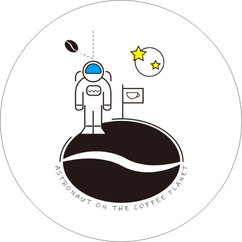
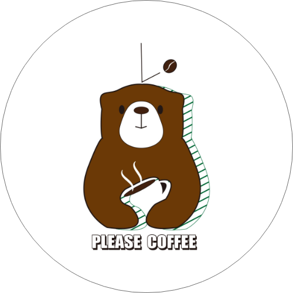
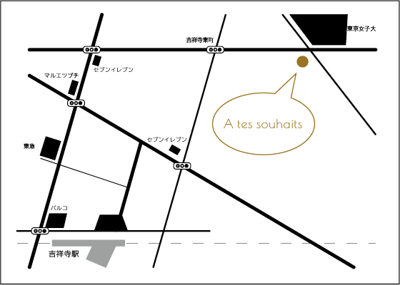
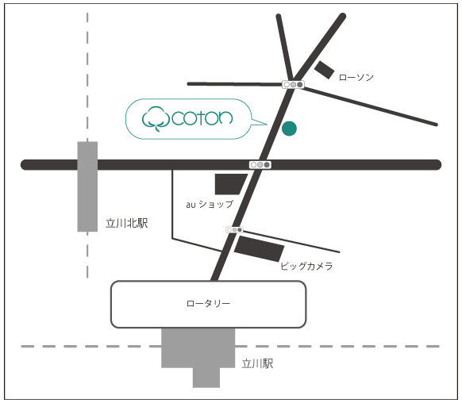

Logo
-

◀宇宙飛行士とコーヒー惑星
ダサすぎない面白Tシャツロゴを作成。絵文字ぽい絵柄を集合させポップでストーリー性のあるロゴにしました。
使用ソフト：Ai／制作時間：2h
-

コーヒーくま▶
コーヒーと同系色のクマと融合させ、カジュアルなTシャツにするため影をボーダーにしたワンポイントロゴです。もともと白熊だったはずがコーヒーを飲みすぎて体が茶色くなってしまったという設定です。
使用ソフト：Ai／制作時間：2h
Fryer
ケーキ屋「A tes souhaits」▶
グランドオープンに相応しくなるように華やかな写真を使用しました。女性がターゲットのため、全体的に赤やピンクを使い、上下の透過部分をふんわりとした動きをつけて優しい印象のフライヤーに仕上げました。
使用ソフト：Ps／制作時間：1.5h
フレンチ料理店「シャルティエ」▶
安価で本格的なフレンチ料理を食べられるお店のため、値段と料理を大きく打ち出しました。ポップだけど安っぽさが出ないようフォントはゴシック体と明朝体を場面によって使い分け、配色は落ち着いた茶系を選びました。フォークとスプーンはillustratorのブラシツールで作成しました。
使用ソフト：Ps,Ai／制作時間：1.5h
etc

▲使用ソフト：Ai / 制作時間：40min

▲使用ソフト：Ai / 制作時間：40min